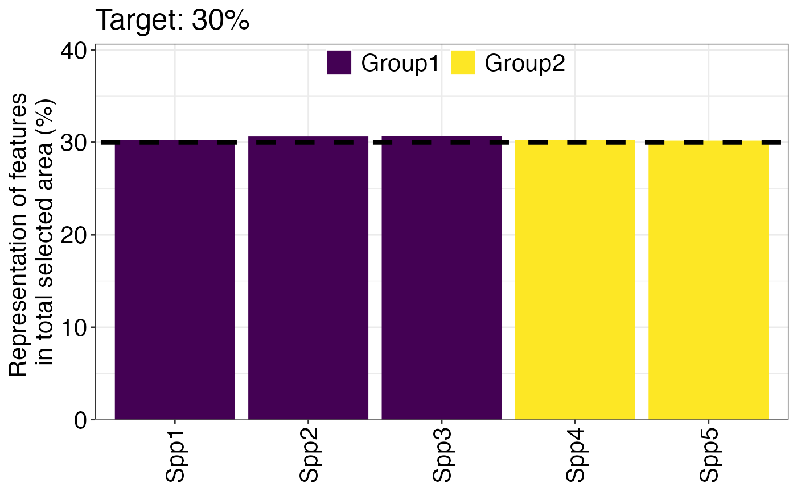
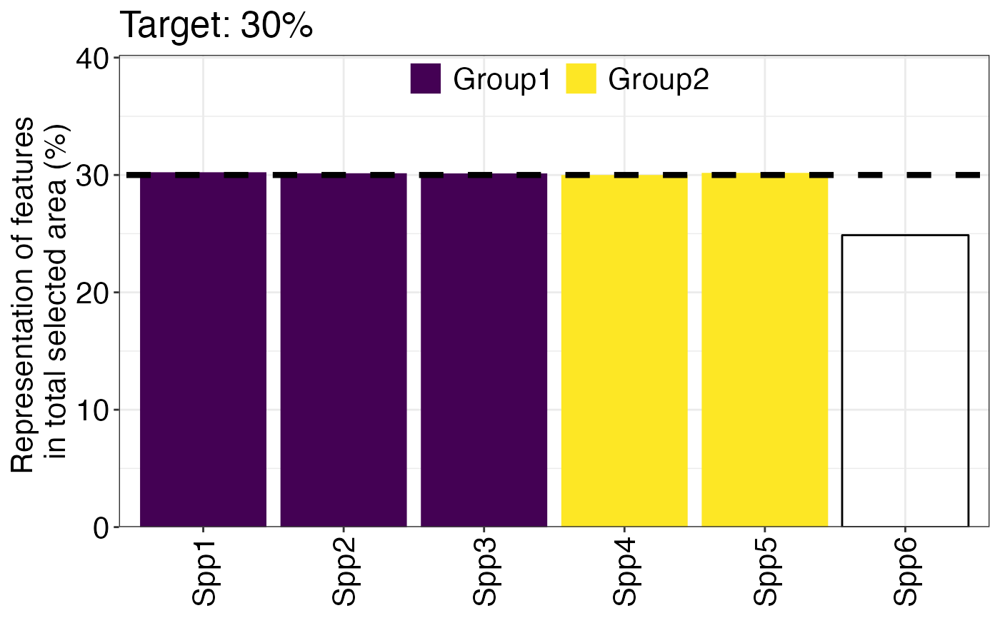

Plot how well targets are met
Arguments
- df
A
dfcontaining the target information (resulting from the splnr_prepTargetData() function)- nr
Number of rows of the legend
- setTarget
A number in percent (%) if all the features have the same set target
- plotTitle
A character value for the title of the plot. Can be empty ("").
Examples
dat_problem <- prioritizr::problem(dat_species_bin %>% dplyr::mutate(Cost = runif(n = dim(.)[[1]])),
features = c("Spp1", "Spp2", "Spp3", "Spp4", "Spp5"),
cost_column = "Cost") %>%
prioritizr::add_min_set_objective() %>%
prioritizr::add_relative_targets(0.3) %>%
prioritizr::add_binary_decisions() %>%
prioritizr::add_default_solver(verbose = FALSE)
dat_soln <- dat_problem %>%
prioritizr::solve.ConservationProblem()
# not including incidental species coverage
dfNInc <- splnr_prepTargetData(
soln = dat_soln,
pDat = dat_problem,
allDat = dat_species_bin,
Category = Category_vec,
solnCol = "solution_1"
)
(splnr_plot_targets(dfNInc, nr = 1, setTarget = 30, plotTitle = "Target: "))
#> Warning: Removed 5 rows containing missing values (`position_stack()`).

# including incidental species coverage
dfInc <- splnr_prepTargetData(
soln = dat_soln,
pDat = dat_problem,
allDat = dat_species_bin2,
Category = Category_vec2,
solnCol = "solution_1"
)
(splnr_plot_targets(dfInc, nr = 1, setTarget = 30, plotTitle = "Target: "))
#> Warning: Removed 1 rows containing missing values (`position_stack()`).
#> Warning: Removed 5 rows containing missing values (`position_stack()`).
